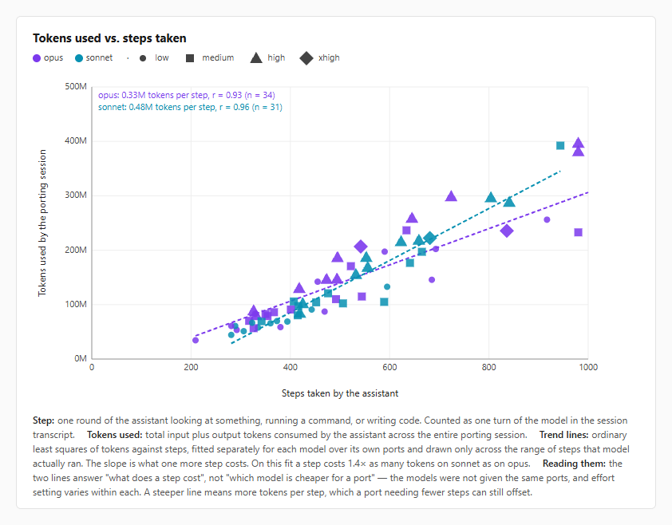

We Ported 65 OSS Projects In 4 Days With AI
How Akka Specify and frontier models enabled rapid, production-ready ports of 65 open-source projects. From specification to validation: 99.3 hours of continuous automated delivery.
The Opportunity
We see a potential for AI to write and maintain entire systems without human involvement. In March, we released Akka Specify, a spec-driven delivery toolkit for creating new systems with Akka's SDK. Akka's SDK takes an opinionated approach to defining and implementing an AI system—inclusive of APIs, orchestration, agents, streaming data, and stateful memory.
We observed a few things after the release of Akka Specify:
- Our solution architects were completing POCs in hours instead of weeks.
- Our account executives were shrinking delivery times (by many months) in customer proposals.
- A customer upgraded a codebase written in Kalix to Akka in a few hours.
- We redesigned a legacy RAG system with 200K lines of code generating 64% eval accuracy reimplementing it in 48 hours shrinking the LOC to 9K while improving eval accuracy to 95%.
We attributed these gains to the dramatic improvement in intelligence with frontier models, the improved reasoning structure that comes with AI harnesses, and structural constraints baked into Akka's SDK.
Akka's SDK has an opinionated structure that imposes one way, and only one way, to do each thing, such as how one service should reliably invoke another regardless of its location. These restrictions enable us to provide a guarantee that if the AI system compiles and passes tests locally, then it's production-ready without further code modifications. Akka embeds its clustering, elasticity, and resilience runtime on every build, producing a full-stack system while not intermingling resilience and scalability concerns within application code. These SDK opinions have made Akka particularly well-suited to leveraging AI to rapidly generate complex, production-ready backend systems.
In a world where the hyperscalers, Palantir, C3.ai, and the frontier model providers are building sizable Forward Deployed Engineer (FDE) armies, we wondered: why can't AI write and maintain entire systems without human involvement?
So we put it to the test. We rewrote 65 open-source software projects using Sonnet, Opus, and Akka Specify in 99.3 hours total.
The Two-Tranche Approach
We did this in two tranches:
- Span: A pass across all 65 projects that would create a fully mapped specification and implement a slice of up to 10% of the project's surface area. We did this on OSS projects that were both well-suited to an Akka port and those that were not (Go libraries, Rust modules, systems that didn't have a need for backend services).
- Deep dives: Complete implementation of all of the project's use cases for those projects where we identified places where Akka could have a significant positive impact: systems with a Python backend, limited persistence, orchestration, scheduling, streaming or distributed fundamentals, feasible scope, and a baseline of a quality that could be adequately measured before/after.
Our Experimental Goals
- Specification structure: Akka Specify takes a specification as its input. We wanted to explore whether specifications should have a structure, schema, and maybe even typed behavior so that systems can more reliably be first-pass generated.
- Context file gaps: Akka Specify uses Akka's context files for creating a design and guiding an implementation. We wanted to identify (and hopefully close) gaps within those files that cause faulty initial implementations of greenfield systems.
- Exit Conditions: Delivering a "system" into production is more than code. It's also the harnesses, testing, and organizational requirements that must be satisfied. Akka Specify can enforce Exit Conditions that must be proven by pre-release auditors. We wanted to incorporate best practices from different OSS projects into our list of Exit Conditions and auditors.
- Runtime performance: We wanted to see if Akka's runtime could improve the performance of various OSS projects, and whether Akka's embedded durable execution could create higher forms of resilience for some projects.
- Model and effort impact: Whether there was a significant impact in terms of time to complete, accuracy, and token cost when switching between different Anthropic models and levels of effort.
Summary Metrics
| Total time | 99.3 hours (2026-08-24 through 2026-08-26) |
| Mean time per port | 92 min (median 76) |
| Fastest port | remark42 — 24 min (sonnet/low) |
| Longest port | activepieces — 292 min (opus/high) |
| Total tokens | 9.41B (25.5M output; the rest cache read/write) |
| Sonnet mean time per port | 61 min (n=31, median 60) |
| Opus mean time per port | 120 min (n=34, median 96) |
| Total starting LOC (scope-matched) | 61,835 (64/65 projects) |
| Total finished LOC (port scope) | 43,737 (64/65 projects) |
| Largest LOC reduction | agno — 0.08:1 (1,524 → 127) |
| Largest LOC increase | redash — 2.17:1 (542 → 1,176) |
| Largest performance increase | dify — 143,333× faster ⚠ |
| Largest performance degradation | metaflow — 0.01× (100× slower) |
The Methodology
We ported 65 OSS projects that were considered popular (large numbers of GitHub stars, strong community interaction online, and had a backend). We picked OSS projects in three different flavors:
- Popular AI OSS projects—particularly those that focused on context, memory, and orchestration. Many of these projects are anchored in Python without durable execution, and we expected to see significant performance gains. Some frameworks chosen were direct competitors to Akka. We also included some popular AI harnesses like DeepSeek's new plug-in-only framework.
- Popular networking libraries—particularly those that were built in Go and Typescript. We expected overlap with Akka concepts, and Akka could offer a different structure to such concepts and would likely cause a performance degradation. We wanted to see how well AI would transform a library into a framework where concepts are similar, but the interface would deviate.
- Popular SAAS OSS projects—with rich, complex Web-based user interfaces. These systems have structured APIs which should be well-suited to doing a complex port.
The Delivery Harness
We created a delivery harness that would run in a self-improvement loop:
- Setup: Create a new repository, setup observability, and ensure all discovery and build tooling is installed.
- Discovery: Execute code analysis, domain model analysis, schema analysis, and runtime interrogation of the existing system in order to generate a series of specifications that define the behavior and conditions of the system itself.
- Port: Define a series of exit conditions derived from the specification and then leverage Akka Specify's planning, tasking, implementation, building, and testing capabilities to author the system with Akka best practices, and then execute Akka's review to ensure that it matches the design standard expected.
- Benchmark: Execute both systems with a single runner that measures successful execution of all test suites, counts lines of code and assess end user latency performance. Draft a README and push up to the GitHub repository.
- Improve: Record what failed in discovery or areas where the implementation had to deviate from the specification, and then speculate on techniques we can use to improve the discovery engine or specification standard for the next iteration.
We would rewrite any API, CLI, and MCP surface adhering to the original's design as closely as possible. For any project with a Web GUI, we brought that GUI over wholesale, but modified the way the GUI accesses endpoints to take advantage of Akka's server-side events and other streaming capabilities. We did not port mobile, Slack, WhatsApp, or other types of app interfaces that would require human configuration to properly test for validity.
After completing a detailed discovery phase, AI would generate a detailed specification and implementation plan. Claude was required to use Akka Specify for the implementation leveraging Akka's components with a focus on:
- Minimizing total LOC.
- Eliminating functional redundancies.
- Avoiding non-determinism when unnecessary (ie, an agent for the sake of an agent should be avoided).
- Optimizing for performance (such as using CQRS to separate writes from reads).
- Leveraging Akka's embedded persistence layer of event-sourced entities and key-value entities, workflow for orchestration, views for read models, and durable state replicated across nodes before attempting to import an external database, graph store, or vector store. We were pleased to find that after all ports had finished, none of the projects needed to import an external persistence engine.
The port was only considered complete and successful if the source system's unit and integration tests would pass when run against the new Akka system. Additionally, Claude was required to run /akka:review after every port which executes a variety of design, performance, and code structure auditors. Claude was required to resolve every identified issue.
Analysis
Model and Effort Performance
We expected Opus to be quicker as it should get more of the analysis right on the first pass. But what we found was that effort was a better barometer of speed. Since we added guardrails over time, we could ensure that there was adequate output accuracy (ie, the project wasn't done until all unit tests passed) regardless of model and effort.

Efficiency score: Cube root of (turns ÷ median) × (time ÷ median) × (tokens ÷ median). Lower is more efficient.
When taking into account efficiency (an aggregate score of total round trips to the model, total wall clock time to complete, and total tokens consumed), both Opus and Sonnet showed similar efficiency until they hit xhigh effort.
But, while they were largely the same efficiency, you still paid more total tokens for higher efforts than you did for lower efforts.
Complexity-Adjusted Efficiency
The dataset was large enough where we could predict the efficiency that was expected given the total complexity of the original project. Complexity here is measured by the total LOC of the original project, using that as a cheap predictor of total complexity. When conversions were efficient, they were anywhere from 50-90% more efficient than expected, but when they were inefficient, they had some significant outliers where they could be 150-300% less efficient than expected.
LOC and Performance by Project Category
It seems that the type of application that was ported was a predictor of whether Akka could improve its LOC and its performance. Big SAAS applications and large complex frameworks saw significant performance boosts due to Akka's event-sourced entities, embedded durable execution, and in-memory durable data.

LOC ratio: Port LOC divided by source slice LOC. Values below 1× mean the port is smaller than the original. The trend line shows how compression correlates with project size.
Guardrails and Efficiency Over Time
Over time, after each port was completed, the engine would self-assess whether there were additional checks that it should do when working on the next port. These would show up as additional auditors and guardrails. And, as you'd expect, as you add more exit conditions, auditors, and guardrails, the ports become less efficient.
Steps vs. Tokens
It wasn't obvious to us before running the experiment, but after looking at the data, it does seem intuitive that younger, smaller models need more round trips ("turns") to go through all of its analysis and work before it signs off on the final outcome. You can see from the data that, generally, sonnet needed a lot more turns than opus, and these extra turns typically led to more tokens being consumed in aggregate. Since the cost per token is cheaper in sonnet vs. opus, this may be a moot point in terms of total cost of a port, but for those who are hosting their own models with spare GPU to execute more inference, the extra turns of a smaller weight model may be worth the cost.

Tokens vs steps: Linear relationship between conversation turns and total tokens consumed. Sonnet requires more turns; Opus consumes more tokens per step.
Performance Outcomes
We had hoped to show that Akka's runtime and durable execution engine created a simpler code base while introducing significant performance gains for each project. That happened in quite a few places, but there were some significant degradations in others.
We were surprised to see how Akka's abstractions lead to smaller code bases that could be predicted based upon their original LOC size.

Performance quadrants: Ports that achieved both smaller code AND faster performance (lower left) vs. those that grew larger (lower right), and performance losses (upper left/right).
Why LOC Shrinks With Akka
A lot of what's in a big open-source project isn't the actual feature—it's the plumbing. This includes things like:
- Threads that pass work around so nothing gets stuck.
- Locks that prevent two things from stepping on each other.
- Files-on-disk to remember what happened last time.
- Little safety checks to make sure the data isn't garbage.
Akka comes with all of that built in. So the more plumbing capabilities that were in the original, the better Akka would do.
Why LOC Increases With Akka
Akka asks you to be explicit about a few things that little scripting languages let you fudge. In other words, Akka depends upon Java which is strongly typed (and you can see a long history of writings from different vendors on the benefits and consequences of typing). In a small Python or JavaScript project you write one line that mutates an object and it just works. In Akka you write a SomethingHappened record, a SomethingCommanded record, a SomethingState record, and a bit of code that says "when this thing happens, the state goes from A to B." For big projects that's a rounding error; for tiny projects that structure ends up as a lot of unnecessary overhead.

Tokens vs LOC saved: Positive X-axis means the port shrunk the codebase. Larger ports with significant savings didn't necessarily consume more tokens than smaller ports.
Performance Gains
We believe that these elements cause Akka to offer a performance increase:
- Your data is in-memory and durable, persisted transparently without a developer coding database semantics. Most projects hit a database on every request—issue a SQL query, wait for the disk, parse the result, close the connection. In Akka, the "row" you'd query is an in-memory object called an entity. A request that reads or updates one entity is a plain field access. That single change turns a millisecond-per-query database call into a microsecond field read. Most of the biggest speedups in the data—1,000×, 350×, 240×—are this: the source was hitting SQLite or Postgres per request, whereas Akka was reading from memory.
- Writes are durable without being slow. Every change is recorded to an append-only event log so nothing survives a crash gets lost—but the recording happens asynchronously and batched, off the request path. The caller gets its answer while the durability write happens behind the scenes. You get "safe" for the price of "fast."
- No locks or contention. Each entity is single-threaded: only one message at a time, in order, no shared mutable state between requests. Most fast-looking Python and Node code has hidden costs from asyncio.Lock, Mutex, and defensive "check-then-act" guards. Akka's single-writer entities make all of those unnecessary.
- Streaming is back-pressured and non-blocking end to end. Data flows through the system without buffering and without threads blocking on each other. Throughput is limited by the slowest stage rather than contention.
- Services are clustered from within. When you scale from one node to a hundred, the same code runs—messages route to whichever node holds the entity, and there's no database in between coordinating anything. Most projects reach for Redis or an external message queue to scale; Akka has that inside the runtime.
- JVM JIT. After a warmup pass the hot paths run at essentially native speed. Interpreted Python and Node can't catch up on tight inner loops.
Effort and Token Cost
And there doesn't seem to be any correlation to whether improving LOC would cause a performance increase or not.

Answer parity: The green band at the top shows ports that matched the original's output on 100% of test cases. Lower ports show partial parity, indicating either nondeterminism in the original or edge case differences in the port.
Lessons Learned
1. Specifications Must Be Structured Data
Every port that ran through the harness produced a spec before writing any code. What we watched across all iterations is that the structure of the specification determined whether a first-pass implementation was correct. Ports whose specs enumerated their claims, cited them to evidence, and typed their answers (this input produces that output; this state transitions to that state) generated code that matched behavior on the first pass. Ports whose specs were prose—"the system should handle X gracefully"—generated code that was plausible and wrong, and the errors surfaced two to four steps downstream when the port was already committed to a design or a structure.
The rework cost of the second kind is measurable. The most expensive ports in the run—the ones that spent 250+ minutes and burned 400M+ tokens—were disproportionately ports whose early specs left decisions implicit. We added a rule that "any claim about a class needs a list" midway through the conversions and every port after that paid slightly more per iteration but had fewer turns before getting to accuracy and compliance.
2. Akka's Context Files Have Gaps
Across all ports, the model's initial implementation choices were high-quality on the components Akka's context describes in detail—entities, workflows, endpoints, views—and low-quality on the choices between them. Which effect goes in which component, whether a workflow should orchestrate or a consumer should react, when a KVE is enough and when an event-sourced entity is required—these are the questions where first-pass code was most often rebuilt in the review step.
3. Exit Conditions Capture What "Shipping" Means
The eight-step pipeline that we generated that standardized how a port should work—pick, start, work out what it does, rebuild, measure, publish, write up, fix the method—is the closest thing we have to a portable definition of "system delivered." Every guardrail we added mid-run (sweep leftover processes, refuse an empty screen, close the rendering gate, warn on a hung tool at four heartbeats) turned into an Exit Condition that needed to be audited on a future project.
This reinforces our thinking around providing an enforced mode for Akka Specify where we allow enterprises to define exit conditions from across a variety of different dimensions, integrate the auditors with internal tooling that knows how to measure these conditions, and to enforce them as part of the project's build and test cycle.
4. Akka's Runtime Delivers on Performance and Resilience
Across the ports where we could time the same slice of work on both sides, the port is dramatically faster whenever the original relied on a database, a language interpreter, defensive locking, or hand-rolled scaffolding—which is most of them. In-memory entities beat SQL queries. Single-threaded actor mailboxes beat locks. Async journal writes give durability without paying for it on the request path. The measured range—from ~1.3× on already-fast Java originals to 1,000×+ on database-bound or event-loop-bound originals—is entirely explained by how much plumbing the original was carrying that the port doesn't need.
Where the port looks slower on the benchmark, the cause is nearly always that the port ships things the source didn't: durability, HTTP surface, or cross-component boundaries. You could argue that this isn't a fair port, that we are porting an apple and turning it into a turnip, and that it is pretty fair, so it's hard to draw strong conclusions from that.
On resilience: yes. Every port ships event-sourced durability by default. Every port survives a mid-request crash. Every port ports cleanly to multi-region without changing the code. These aren't things that many of the originals do out of the box. The runtime's embedded durable execution is a step-function improvement in resilience across every category we tested.
5. Model and Effort: Latency vs. Cost
Sonnet is roughly twice as fast (wall-clock) as Opus per port. Opus uses about 40% fewer tokens per port. Complexity-adjusted efficiency—our composite of steps, time, and tokens normalized to the median port—puts the two models within 8% of each other. Choosing the model is a latency-versus-token-cost tradeoff, not an efficiency-versus-inefficiency tradeoff.
Effort matters more than model. Moving from low to high effort roughly doubles the composite efficiency score inside either model. That's a bigger swing than switching models at any effort level. The most efficient cells in the matrix—opus/low and sonnet/low, effectively tied—do the same-quality work at a fraction of the higher-effort cells' cost. In this run there is no evidence that higher-effort settings produced meaningfully more grounded ports; they just cost more.
One Overall Finding
If there is a single thing to take from 65 ports, it is that the interesting variable in this system is not the model, not the effort, and not the runtime—it is the discipline of the specification and the auditors. The ports that failed did so because the spec left decisions implicit or the auditors weren't yet strict enough to catch a class of mistake. The ports that succeeded did so because the spec forced enumeration and the auditors refused to sign off on anything less. The platform's biggest lever going forward is upstream of the model: it's in making the spec a data structure and the Exit Conditions a versioned, category-aware library.
We've started to see Akka Specify as intelligence that can execute an AI-assisted delivery lifecycle without human intervention—not just single systems, but the infrastructure and audit layer that makes them production-ready.
Filed under